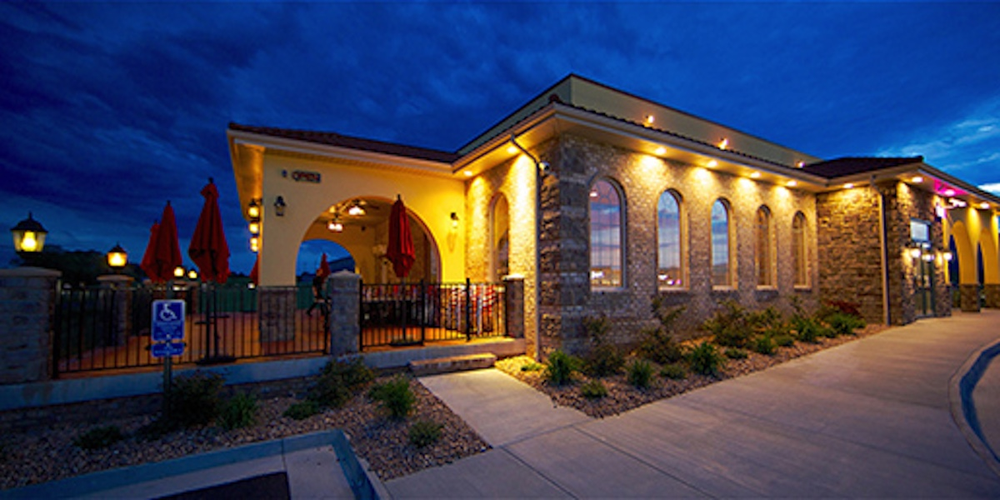

Popular Local Dining
There are plenty of ways to appease your appetite after a long day on the trail. With food stops located every 25 miles or so, your next bite is closer than you think - and you’ll find everything from grab 'n go snacks and carry-out meals to groceries and full-service dining.
Skyland Dining Room
Famous for their blackberry ice cream pie and breathtaking mountain views.
- Cuisine: American, Farm-to-Table
- Price Range: $$
- Proximity: Located within Shenandoah National Park near the Stony Man Trailhead.

Ciro’s Italian Eatery
Offers hearty pasta dishes and pizza, perfect for carb-loading before or after a hike.
- Cuisine: Italian
- Price Range: $$
- Proximity: About 10 miles from the Massanutten Trail.

Jack Brown’s Beer & Burger Joint
Known for their unique burger combinations and a large craft beer selection.
- Cuisine: American, Specialty Burgers
- Price Range: $-$$
- Proximity: Located in Harrisonburg, around 20 minutes from the South River Falls Trail.
Gathering Grounds Patisserie & Café
Known for freshly baked pastries, sandwiches, and a cozy atmosphere.
- Cuisine: Cafe, Light Fare
- Price Range: $
- Proximity: In Luray, just minutes from the entrance to Shenandoah National Park.